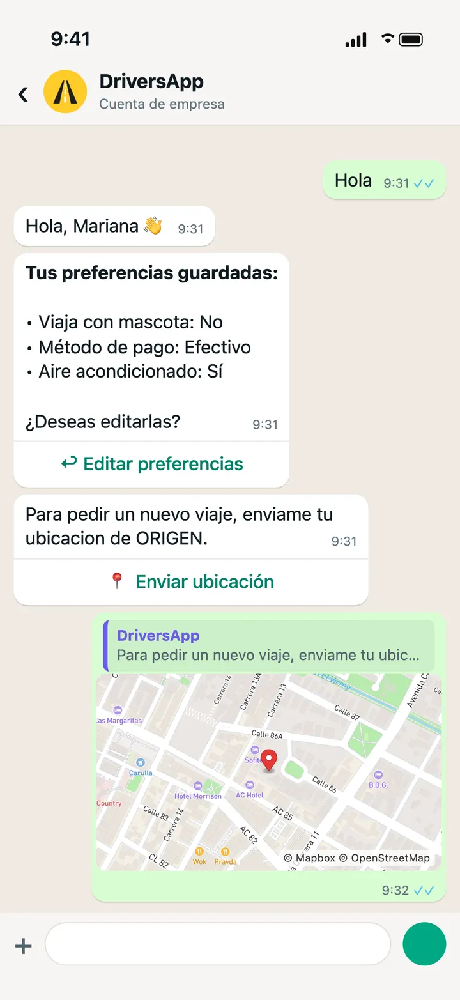
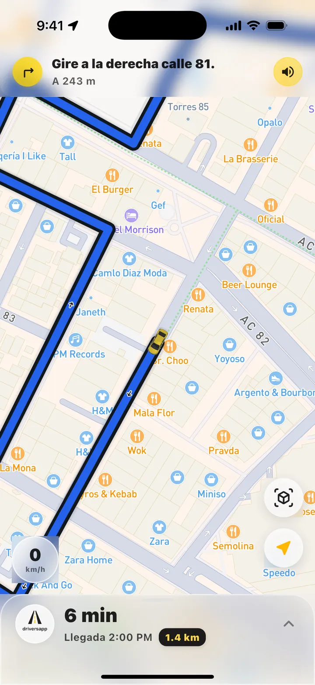
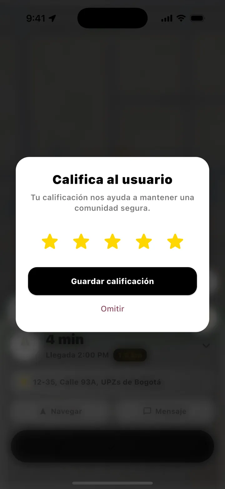
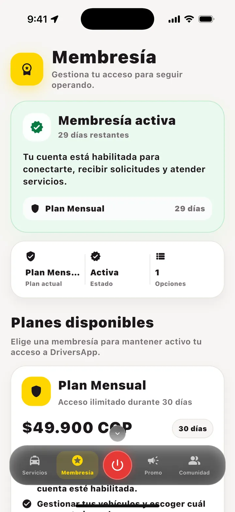
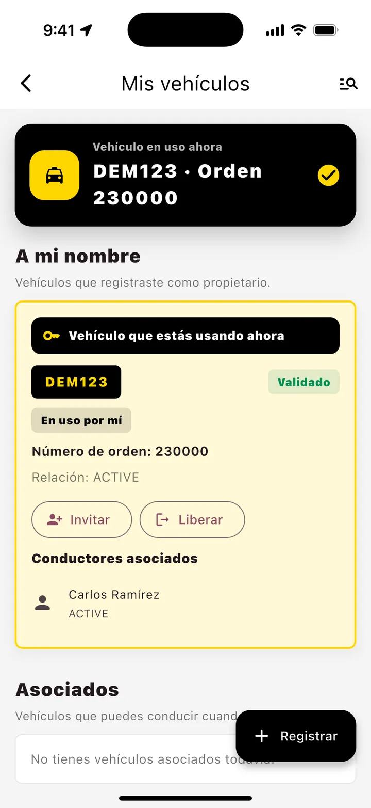
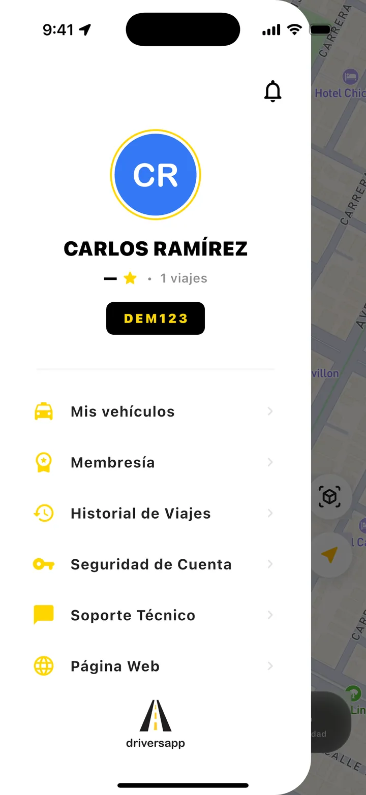
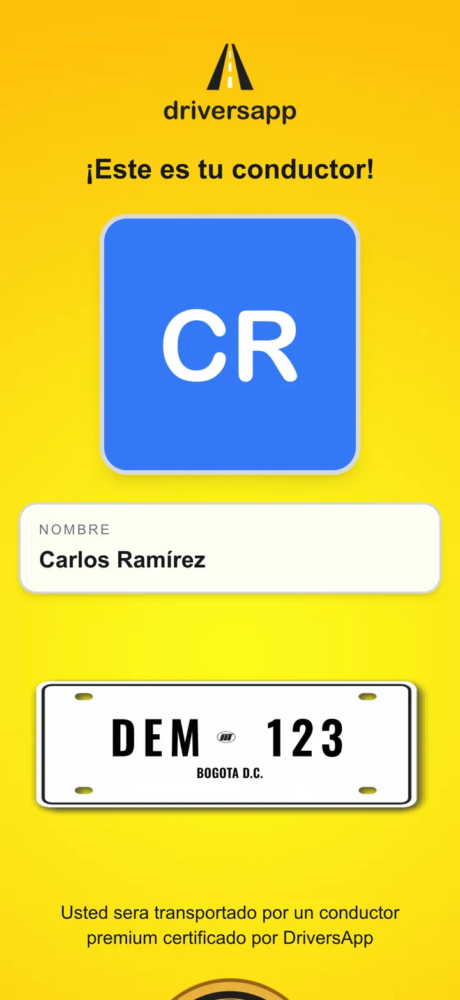

DriversApp
DriversAppCaso de estudio · Full stack
DriversApp
Plataforma de transporte para conductores de taxi en Bogotá: app móvil, API, panel de administración y web pública.
Qué resuelve
Solicitudes por WhatsApp
El pasajero pide el viaje en un chat; la API lo cotiza y busca un conductor disponible.
Viajes en tiempo real
Oferta al conductor, navegación paso a paso, código de verificación y cobro.
Registro con IA en el teléfono
OCR de documentos, detección de rostro y validación de fotos del vehículo con ML Kit.
Membresías con pagos
Suscripción de los conductores con checkout y webhook de Wompi.
Cómo funciona un viaje
El mismo viaje, visto por el pasajero y por el conductor.
1 · Pasajero en WhatsApp
Pide el taxi desde un chat



Recreación con los mensajes reales del bot y datos de demostración.
2 · Conductor en la app
Acepta el viaje y lleva al pasajero






La app también gestiona la membresía, los vehículos y el perfil del conductor.



3 · Pasajero en la web
Sigue el taxi y confirma que es el correcto
El enlace del chat abre el mapa en vivo. Los códigos QR del taxi muestran la placa y el conductor asignado antes de subir.



Arquitectura
- Bases separadas por dominio: usuarios, viajes y clientes, cada una con sus migraciones.
- Estado en tiempo real en Redis: conductores disponibles, ofertas y códigos de verificación.
- Asignación por turnos: la oferta pasa de un conductor disponible al siguiente, con un minuto para responder.
- Chat del viaje: WebSocket en la app del conductor y WhatsApp para el pasajero.